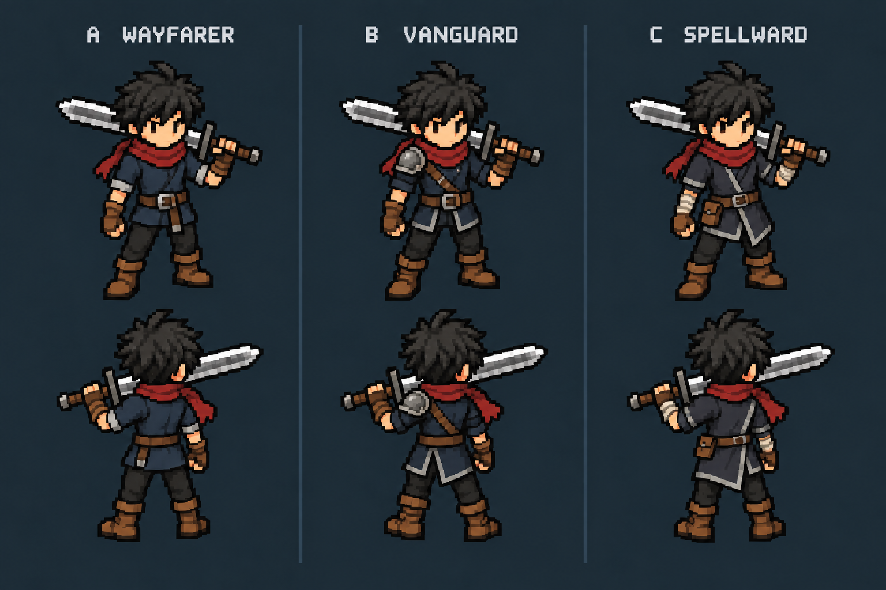

King — choose the character foundation
Same adventurer, three clothing directions. These names describe the artwork; they are not character classes.

Small-scale readability
Approximate 28-pixel standing body, sampled from the concept board. This checks silhouette and color readability; final pixel cleanup and animation are still pending.
A · Wayfarer
Clean tunic, rolled sleeves, light leather equipment. Closest to a simple starting adventurer.
B · Vanguard
Rugged outfit and one shoulder plate. Strongest fighter silhouette.
C · Spellward
Distinct seam trim and wrist wraps. A practical adventurer who can grow into divine powers.
Next, after choosing: a short stable idle, alternating-step walk, and broad swing animation proof using that same design.
Static review only. No runtime character, skills, collision or save changes. Generation prompt